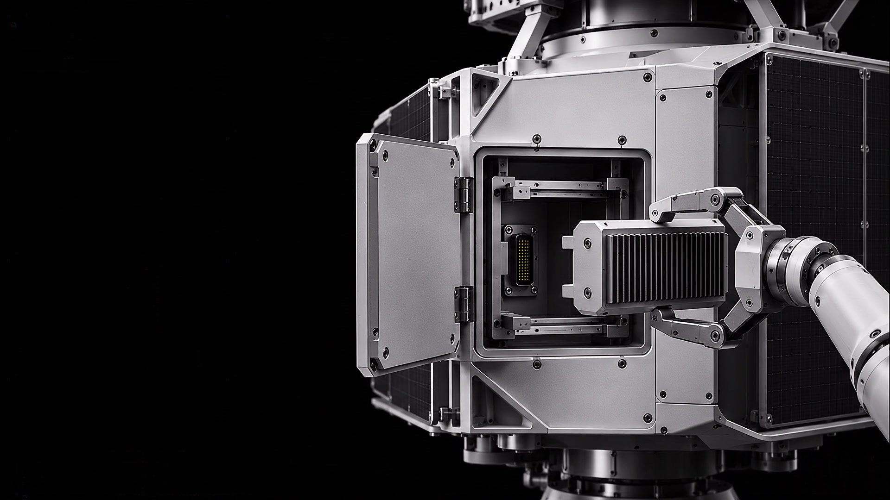
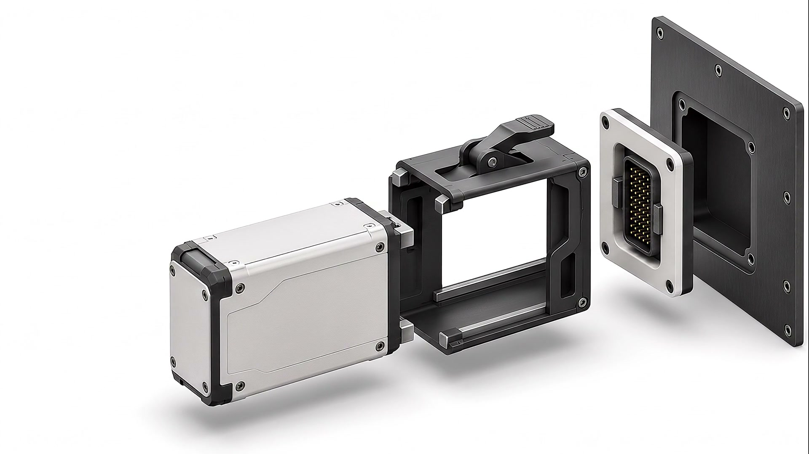
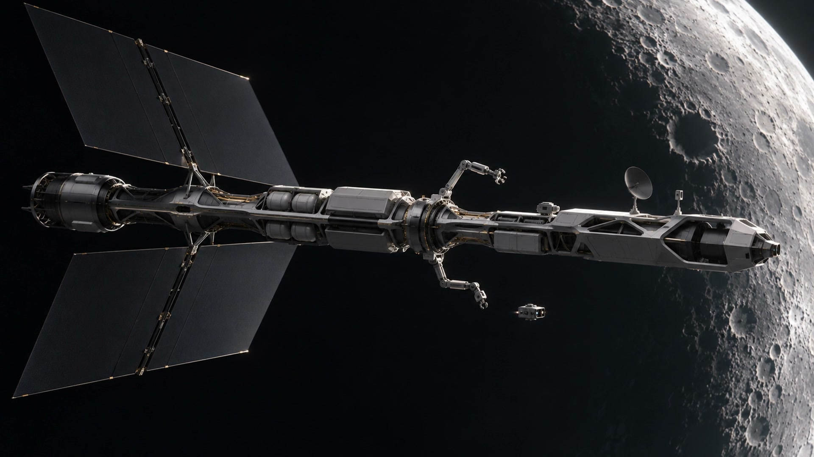

SPACE SYSTEMS / SERVICEABILITY
The mission
continues.
Spacecraft that can be maintained,
upgraded, and useful for longer.
Beginning with one question: what is safe to do
when a module exchange is interrupted?
Concept visualization Unverified hardware geometry
RESEARCH / THE QUESTION
A command is not
a physical fact.
A latch may have moved. A report may be stale. Power may be isolated, while stored energy remains unresolved.
CARTAN investigates recovery during exchange of one prepared external module, when mechanical retention and electrical isolation are only partly observed.
Can the next decision reduce intervention, recovery time or cost while meeting a defined safety requirement?
Concept research. No measured CARTAN advantage, validated flight hardware or accepted mission envelope.
LABORATORY / COMPONENT EXPLORER
CONCEPT / NOT TO SCALEInspect the exchange.
Select a function. Inspect what it means, what is assumed, and what remains unknown.
UI CONCEPT / MODULE
A replaceable unit
A prepared power or electronics cartridge is the candidate study object. Its function is provisional; its geometry is not an engineering specification.
- Physical definition
- Prepared removable cartridge
- Measurement
- Mass and dimensions not established
- Evidence
- Proposed in research handoff v3, §4

Original concept artwork · geometry, dimensions and materials are provisional.
LABORATORY / STATE INSPECTION
SYNTHETIC UI EXAMPLEWhat happened?
What can we know?
Keep the requested action, received report and actual condition separate. A stale acknowledgement cannot resolve the physical state.
This example explains the distinction. It does not run a simulation or recommend a recovery action.
- u
Command
Request capture
What was requested - y
Observation
Last acknowledgement is stale
What was reported - x
Physical state
Unknown
What actually happened - b
Possible states
Capture may be complete or incomplete.
What the information permits
Inspect the example’s provenance
Frontend-local explanatory example. No experiment has been executed.
Engineering specification ↗ · Exploratory protocol ↗
Unknown, missing, not measured, explicit null and zero remain different states.
RESEARCH / EVIDENCE
EXPLORATORY RESEARCHA test that can
change the direction.
A useful result can favor a simpler sensor, an interlock, a procedure—or no separate CARTAN product.
PLAN / NO OUTCOME CLAIM
Experiment planned
The proposed study compares interrupted exchange with competent recovery, operator assistance and simpler sensing or interlocks. Mission limits and acceptance criteria remain unresolved.
RESEARCH / COMPARISON
The simpler solution
belongs in the test.
Equal information for algorithm comparisons. Added hardware carries its mass, power, integration and lifecycle cost.
| Method | What it contributes | What must be established |
|---|---|---|
| B0 / Engineered recovery | Interlocks, retries, safe abort and documented recovery | A competent baseline with the same information |
| B1 / Operator assistance | Trained human recovery under stated communications | Realistic delay, information and intervention burden |
| B2 / Simpler hardware | An independent sensor or passive improvement | Independence, diagnostic coverage and full system cost |
| C / Candidate method | Explicit reasoning over possible physical states | Useful improvement that survives the simpler alternatives |
Before a result can count
Define the task. Bind the physical states, guards, limits, faults and measurements to a real interface.
Freeze the comparison. Set endpoints, exclusions, held-out cases and stopping rules before evaluation.
Keep every outcome. Report unsafe events, safe aborts, interventions and completion separately. Eventual completion does not erase a violation.
RESEARCH / PRIMARY SOURCES
The work already done
sets the standard.
Replacement has flight heritage.
Battery and CPU transfers were demonstrated in 2007. Replacement itself is not a CARTAN invention.
↗02 / SPACE USB · 2026Interfaces and test benches exist.
Mechanical capture and electrical checks are established work. Confidential results limit public comparison.
↗03 / NASA · PASS · 2022Recovery is an existing research field.
Supervised assembly explicitly includes planning and error recovery. The exact CARTAN gap remains unproven.
↗04 / GAO · JULY 2025Technical value needs a mission.
Fragmented demand and adoption barriers make a real operator requirement essential.
↗These are source-reported findings, not independent replication or endorsement of CARTAN.

THE LONGER HORIZON
Spacecraft that
can change.
Maintenance, upgrades and reconfiguration.
An ambition earned one tested step at a time.